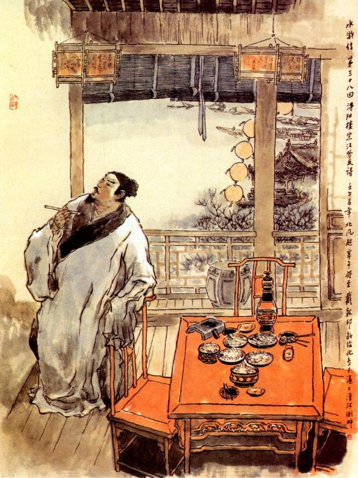
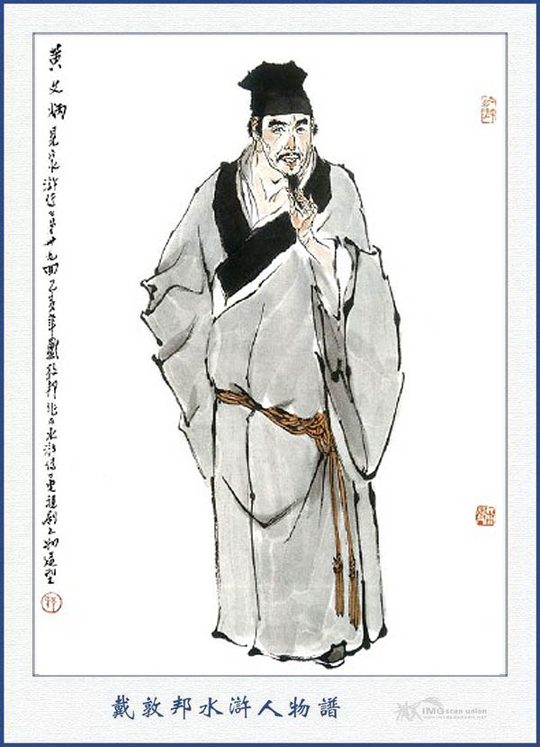
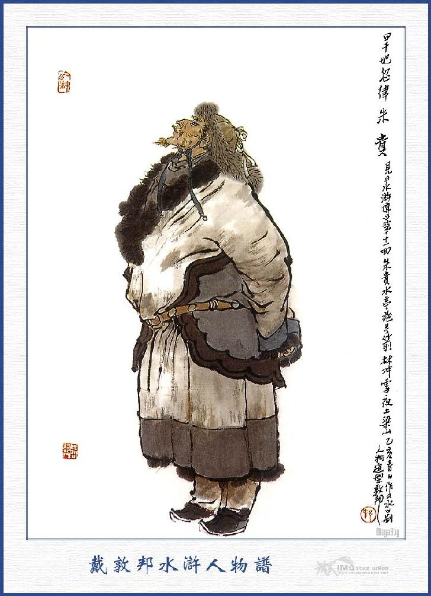
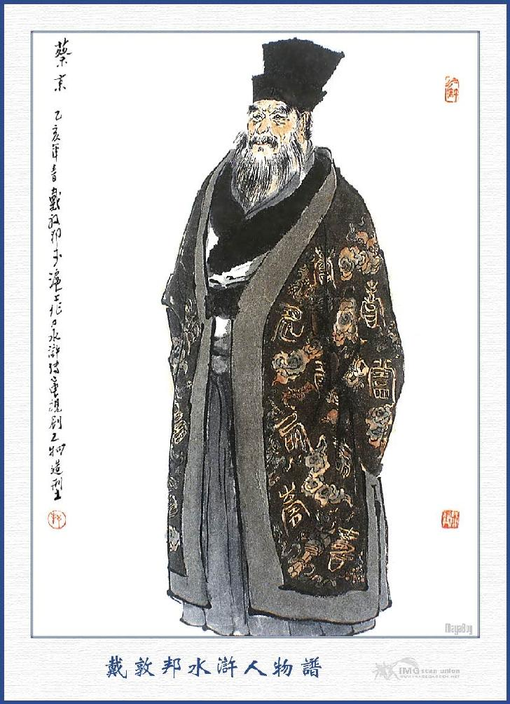
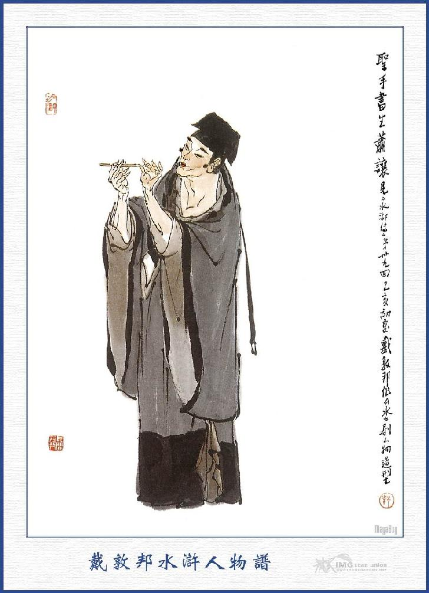
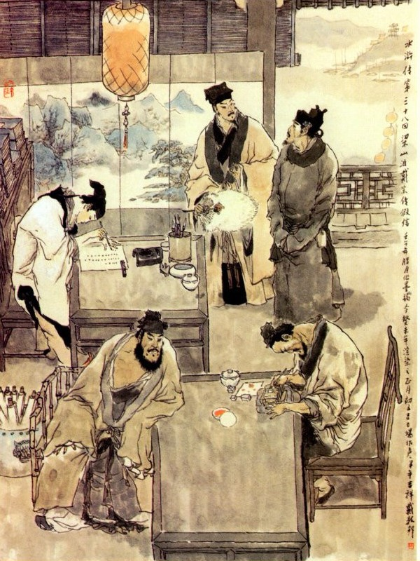

Bấy giờ Tống Giang cùng Đới Tung thấy chủ hàng toan đi trình quan thì lấy lời xếp dẹp im đi rồi nhất diện dùng các phép để cứu người con gái tỉnh dậy.
Sau bố mẹ người con gái đến đó, nghe nói đến tên Hắc Toàn Phong thì lặng người kinh sợ mà không dám phàn nàn nói một câu gì. Tống Giang hỏi mụ già rằng:
- Nhà mụ tên họ chi? Người ở đâu?
Mụ già đáp rằng:
- Chúng tôi là người họ Tống, quê ở Kinh Sư, hai vợ chồng già; chỉ có một người con gái này, phải cho đi hát xướng kiếm ăn. Nhân vì tính nó cấp bách, không hiểu các ngài đương nói chuyện, nên mới đường đột vô lễ, để đến Ca Ca đánh đập như vậy, thực đau đớn cho mẹ con tôi quá nỗi!
Tống Giang nghe nói liền bảo rằng:
- Ngươi cho người theo đến nhà ta, ta sẽ cho hai mươi lạng bạc để làm vốn kiếm ăn rồi kiếm người tử tế, gả bán cho nó nương tựa, khỏi phải đi hát xướng khó nhọc như thế nữa.
Hai vợ chồng mụ già cảm tạ mà nói rằng:
- Chúng tôi đâu dám xin ngài nhiều thế.
Tống Giang nói:
- Được, ta đã hứa là ta cho đủ, không ngại điều chi. Bảo con ngươi cứ theo ta mà lấy.
Hai người vâng lời cảm tạ vô cùng, Đới Tung trách giận Lý Quỳ mà rằng:
- Hắn đi đến đâu, chỉ chực sinh sự đánh nhau, để Ca Ca phí tổn biết bao nhiêu tiền bạc!
Lý Quỳ nói rằng:
- Tôi chỉ sẽ để tay vào một tí mà nó đã ngã ngay, xưa nay chưa thấy đứa nào yếu đuối thế bao giờ? Bây giờ cho bác đánh tôi trăm cái tát vào mặt tôi, xem tôi có cần gì không?
Tống Giang cùng mọi người nghe nói, đều cười ồ cả lên, Trương Thuận gọi tửu bảo lên bắt tính tiền hàng để nhận trả. Tống Giang nhất định không nghe mà rằng:
- Tôi mời bác đến đây uống rượu, có lẽ nào lại để bác trả tiền cho tiện.
Trương Thuận cũng nhất quyết trả tiền mà rằng:
- Mấy khi tôi gặp được Ca Ca. khi ngài còn ở Sơn Đông, hai anh em tôi đã bao phen toan may trời xui nhân huynh đến đây, cho chúng tôi được gặp, xin nhân huynh cứ cho thế mới được.
Đới Tung cũng khuyên Tống Giang rằng:
- Trương Nhị Ca đã có lòng kính đãi như thế, xin nhân huynh cũng nể lòng mà nhận lời cho là hơn.
Tống Giang vâng lời mà đáp rằng:
- Nếu vậy thì lần sau tôi xin đáp lễ lại.
Trương Thuận cả mừng, liền xâu hai con cá rồi cùng Đới Tung, Lý Quỳ và lão già họ Tống kia mà cùng đưa chân Tống Giang về dinh. Khi về đến phòng giấy trong dinh, Tống Giang lấy ra hai mươi lạng bạc, đưa cho lão già họ Tống về trước rồi cùng ngồi nói chuyện với nhau.
Một lát trời gần tối, Tống Giang liền lấy bức thư của Trương Hoành, đưa cho Trương Thuận rồi Trương Thuận để hai con cá lại cho Tống Giang và từ biệt ra về. Tống Giang lại lấy một đỉnh năm mươi lạng bạc đưa cho Lý Quỳ mà bảo rằng:
- Anh em hãy cầm lấy để mà tiêu dùng.
Lý Quỳ nhận lấy rồi cùng Đới Tung từ biệt Tống Giang mà trở về trong thành. Bấy giờ Tống Giang đem một con cá đưa biếu Quản Doanh, còn một con để nấu canh ăn. Tống Giang ăn cá tươi ngon miệng, ham ăn cá nhiều đến nỗi canh tư đêm ấy sinh ra chứng đau bụng đi rửa. Từ đấy đến sáng, chàng đi tả có tới hai mươi lần, mê mệt nằm ở trong phòng không sao dậy được. Các người trong doanh vẫn yêu thích Tống Giang là người tử tế xưa nay, liền đem cơm cháo mà chữa chạy đỡ vực Tống Giang. Ngày hôm sau, Trương Thuận thấy lính Tống Giang thích ăn cá tươi, lại xách vào hai con nữa để biếu và tạ ơn bức thư Trương Hoành một thể. Khi vào tới nơi, thấy Tống Giang đương bị bệnh nằm ở bên giường, các tù đồ hầu hạ trông nom ở trong phòng, liền nói với Tống Giang để mời thầy về chữa. Tống Giang bảo Trương Thuận rằng:
- Tôi chỉ vì ăn nhiều cá, sinh ra thương thực mà đau bụng, vậy bất tất phải uống thuốc, chỉ uống một thang hòa hợp cũng có thể khỏi được ngay.
Nói đoạn, bảo Trương Thuận đem hai con cá, một con đưa cho Vương Quản Doanh, một con đưa cho Triệu Sai Bát, Trương Thuận vâng lời đem biếu hai người: Rồi quay ra cân một thang thuốc hào hợp đem đến, bảo tù đồ sắc thuốc cho Tống Giang rồi mới trở về.
Ngày hôm sau, Đới Tung mua sắm rượu chè, dắt Lý Quỳ đem đến phòng giấy, định để thiết đãi cảm vừa khỏi, nên không dám thiết, bèn cùng nhau ngồi ở ngoài phòng để ăn uống, đến chiều ai nấy về nhà.
Tống Giang tĩnh dưỡng được dăm bảy ngày, thấy trong mình đã hơi khoe khỏe thì có ý mong Đới Tung đến chơi mà không thấy đến, Ngày hôm sau Tống Giang lại đi vào thành để tìm Đới Tung. Khi tới trong thành hỏi thăm nhà Đới Viện Trưởng thì phố sá đều nói rằng:
- Ông ta không có vợ con nhà cửa, chỉ trú tạm ở am Quan Âm bên cạnh vách miếu Thành Hoàng gần đó.
Tống Giang vội vàng tìm tới nơi thì đã thấy khóa cửa đi vắng. Chàng liền quay ra tìm hỏi nhà Hắc Toàn Phong thì thấy nói rằng anh ta không có nhà cửa cũng không trọ ở đâu, vẫn cứ quanh quẩn ở trong nhà lao, khi rồi thì lại ở chỗ này vài hôm, ở chỗ khác vài hôm, không biết đâu mà tìm được. Tống Giang nghe nói thì lại hỏi thăm nhà Trương Thuận thì có người nói, hắn vẫn ở làng xóm ngoài thành, chỉ trừ khi có thu nhặt tiền nong mới vào thành mà thôi. Tống Giang lại vội vàng quay ra nẻo bờ sông để tìm Trương Thuận.
Chàng đương một mình vơ vẩn, xem ngắm cảnh vật bên sông, chợt thấy một tòa tửu lâu ở trước mặt, bên cửa treo một lá cờ viết mấy chữ "Hiệu Chính sông Tầm Dương" giữa lúc hiên chạm treo một biển để ba chữ "Lầu Tầm Dương" chữ của ông Tô Đông Pha viết rất lớn. Nghĩ đoạn liền bước tới nơi, thấy hai bên cửa đỏ bên lầu đều có biển trắng, mỗi bên viết năm chữ: "Lầu lớn trong thiên hạ: Rượu ngon nhất thế gian!” Tống Giang lên trên gác, chọn một chỗ ngồi, gần phía ngoài sông rồi tựa hàng lan can, nom ra phong cảnh khen ngợi vô cùng. Một lát tên tửu bảo chạy lên bảo rằng:
- Quan nhân định đợi ai, hay tiêu khiển một mình?
Tống Giang nói:
- Ta còn đương đợi hai ông khách nữa mà chưa thấy đến. Ngươi hãy lấy một be rượu và một ít thức nhắm lên đây, đừng lấy cá mới được.
Tửu bảo vâng lời đi xuống gác; một lát mang lên một be rượu Lam Kiều Phong Nguyệt và lấy các thức rau quả, thịt gà dê bày lên bàn. Tống Giang nom thấy bàn đỏ đũa đỏ thức ăn sạch sẽ ngon lành thì trong bụng vui mừng mà rằng: "Thế này mới thực là phong cảnh Giang Châu! Ta tuy bị tội đến đây, song ngắm những sơn thủy thế này, dẫu đến danh sơn cổ tích xứ mình cũng không sao mà ví được?”
Chàng nghĩ vậy liền rót rượu vui uống một mình mà bất giác say sưa quá độ. Bấy giờ trong bụng nghĩ rằng: Ta sinh ở đất Sơn Đông lớn lên ở đất Vận Thành làm Lại xuất thân, kết thúc kể biết bao giang hồ hảo hán. Trong bấy nhiêu lâu tuy chưa lưu được một cười hư danh, song hiện nay công nghiệp cũng chẳng ăn thua, lại còn bị tội đày ải đến đây, khiến cho ta bao giờ về được cố hương mà trông thấy phụ huynh tôn tộc! Nghĩ đến đó thì lấn lòng cố quân tha hương, xúc cảnh hứng hoài, bất giác trông ngắm giang hồ mà tầm tã đôi hàng lụy nhỏ. Chàng liền nghĩ một bài tức cảnh "Tây giang nguyệt" rồi gọi tửu bảo mượn bút nghiên để viết.

Chợt đâu đứng lên nom hai bên vách phấn, thấy có nhiều văn thơ của người xưa đề vịnh, chàng liền nghĩ thầm trong bụng rằng: "Tiện đây bất nhược ta viết ngay lên vách phấn, để làm di tích ở đất Giang Châu, sau này dù có hiển vinh qua đến đất này, trông thấy mấy câu ở trên vách phấn kia cũng đủ nhắc lại cho ta biết cái cảnh huống ấy bây giờ, thế này thực là cùng cực.” Chàng nghĩ đoạn, liền nhân lúc tửu hứng mài mực đặc, lấy bút đẵm rồi viết lên vách phấn mấy câu:
Thủa nhỏ theo đòi kinh sử,
Lớn lên thông thạo quyền mưu,
Khác nào hổ mạnh nấp hang sâu,
Kín nanh dấu vuốt ai biết đâu?
Chẳng may thời vận cơ cầu.
Bỗng dưng chạm mặt đầy Giang Châu,
Một mai may báo được oan cừu,
Máu nhuộm Tầm Dương sẽ biết nhau.
Tống Giang viết xong, xem ngắm một mình lấy làm vui mừng thích chí, lại ngồi uống luôn mấy chén rượu nữa rồi múa chân múa tay cười nói một mình, xuống dưới bài Tây giang tử.
Tâm ở Giang Đông thân ở Ngô,
Mấy phen than thở mấy giang hồ,
Ngày sau như thoả lòng non nước,
Mới biết Hoàng Sào cũng trượng phu.
Viết cạn lại thêm mấy chữ "Vận Thành Tống Giang đề" ở dưới rồi vất bút xuống bàn, một mình ngồi ngâm đọc hồi lâu. Lại uống thêm mấy chén rượu đầy, nghe chừng rượu đã quá say liền gọi tửu bảo lên tính trả tiền hàng, còn thừa lại thưởng thêm cho tửu bảo rồi đứng dậy giũ áo mà đi xuống lầu. Bấy giờ chàng vội vội vàng vàng đi về phong giấy, mở cửa vào phòng nằm vật xuống ngủ thẳng một giấc đến canh năm mới tỉnh dậy, không còn nhớ chi đến sự đề thơ ở gác Tầm Dương.
Năm canh say tỉnh mơ màng,
Sơn Đông chí ấy, Tầm Dương thân rày.
Giang hồ trải mấy đắng cay,
Biết rằng non nước vơi đầy ra sao?
Đối ngạn với đất Giang Châu có một thành nhỏ là thành Vô Vi Quán, có ông Thông Phán tại gia là Hoàng Văn Bính ở đó. Hoàng Văn Bính tuy có học hành kinh sử, song tính người siểm nịnh, tâm địa hẹp hòi, xưa nay thường hay ghen ghét tài năng; hại kẻ hơn mình mà xoay kẻ kém mình, chỉ quanh năm quấy nhiễu chốn hương thôn, không ai là không khinh ghét. Nhân chàng ta biết Xài Cứu Phủ là con quan Xài Thái Sư đương triều nên thường thường đi lại mà tán hót phỉnh phờ, để kiếm đường kiếm lối ra làm quan.
Một hôm, Hoàng Văn Bính đương ngồi buồn bã ở nhà, không có cách gì tiêu khiển, chàng liền dẫn hai đứa đầy tớ theo hầu đi mua một lễ vật để qua sông vào hầu Tri Phủ. Bất đồ hôm đó, trong phủ có mở tiệc công yến, chàng ta sợ tai tiếng, không dám đem vào, liền thầy trò cùng quay ra thuyền để trở về. Khi đến trước lầu Tầm Dương, Hoàng Văn Bính thấy khí trời hơi có phần nóng bức, bèn lững thững quay vào trong lầu chơi ngắm mà chưa quyết ra về. Chàng ta lên gác dạo mát hồi lâu, chợt nom lên vạch phấn ở gần phía lan can, thấy có nhiều thơ đề vịnh, xem ra cũng có bài nghe được cũng có bài lôi thôi lốn thốn, đọc chẳng thành câu. Chàng vừa cười nhạt vừa xem đọc một mình, chợt xem đến bài "Tây giang từ" và bốn câu thơ của Tống Giang thì bỗng cả kinh mà nói một mình rằng:
- Quái lạ! Có lẽ là thơ phản trắc? Ai viết ở đây như thế?

HOÀNG VĂN BÍNH
Chàng nói xong liền xem xuống dưới có năm chữ "Vận Thành Tống Giang đề" thì lại ngâm một lượt mà rằng: “Thủa nhỏ theo dõi kinh sư. Lớn lên thông thạo quyền mưu". Đọc đến đó, chàng bèn cười nhạt mà rằng:
- Anh này cũng tự phụ lắm đây.
Lại đọc tiếp rằng: "Khác nào hổ mạnh nấp rừng sâu. Kín nanh, dấu vuốt ai biết đâu?” Đọc đến đó thì ngảnh cổ lên mà rằng:
- Anh này ra dáng không theo bổn phận của mình.
Lại đọc tiếp luôn: "Chẳng may thời vận cơ cầu. Bỗng dưng chạm mặt đầy Giang Châu". Chàng lại cười mà rằng:
- Tưởng cao thượng quái gì? Té ra thằng tù xung quân ở đây.
Lại đọc: (Một mai may báo được oan cừu. Máu nhuộm Tầm Dương sẽ biết nhau.)
Chàng lắc đầu nói rằng:
- Thằng này định bào thù ai mà lại chực sinh sự ở đây? Ôi cha! Một thằng tù xung quân thì phỏng làm gì được?
Nói đoạn lại đọc bốn câu thơ: (Tâm ở Sơn Đông, thân ở Ngô. Mấy phen than thở với giang hồ.)
- Phải, hai câu này có thể tha thứ được.
Lại đọc luôn rằng: "Ngày sau như thoả lòng non nước. Mới biết Hoàng Sào cũng trượng phu.”
Đọc đến đó thì lắc đầu lè lưỡi mà rằng:
- Thằng cha này xấc thực, nó định làm hơn họ Hoàng Sào, chắc là định mưu phản nghịch chứ không sai.
Nói xong lại đọc đến năm chữ "Vận Thành Tống Giang đề" thì lại nghĩ thầm trong bụng: Tên anh này nghe cũng quen quen, chừng như có chỉ là một anh tiêu lại thì phải?
Nghĩ đoạn lại gọi tên tửu bảo lên mà hỏi rằng:
- Hai bài thơ này ai đề vào đây ngươi có biết đích xác không?
Tửu bảo đáp rằng:
- Hôm qua có người khách vào uống rượu một mình rồi viết lên đó.
- Người như thế nào?
- Người ấy béo đen thâm thấp, trên mặt có thích kim ấn, có lẽ ở trong lao thành đi ra thì phải.
Hoàng Văn Bính nghe nói, gật đầu đắc ý, nhờ tửu bảo cho mượn bút nghiên, chép mấy câu thơ bỏ vào túi áo rồi dặn tửu bảo phải giữ gìn cẩn thận mà không được xóa đi. Đoạn rồi xuống lầu trở về thuyền nghỉ.
Sáng hôm sau, thầy trò lại dậy sớm, khệ nệ mang lễ vật vào biếu Tri Phủ. Bấy giờ Tri Phủ đương ngồi ở nhà trong, nghe nói là có Hoàng Văn Bính đến, liền cho lính mời vào tiếp chuyện. Hoàng Văn Bính đưa tặng lễ vật rồi hai người cùng ngồi nói chuyện rất là mật thiết. Hoàng Văn Bính nói với Tri Phủ rằng:
- Hôm qua chúng tôi đã định vào chầu Tướng Công, song nghe nói trong phủ đương có yến tịch, nên lại phải hoãn đến ngày hôm nay mới dám vào hầu.
Xài Tri Phủ nói:
- Thông Phán với tôi là chỗ tâm phúc với nhau, ngài cứ vào chơi có gì mà ngại. Từ nay xin ngài chớ nệ làm chi, phải lấy tình thân mới được.
Hoàng Văn Bính vâng lời rồi lại hỏi rằng:
- Dám thưa Tướng Công, lâu nay trên Thái Sư Ân Tướng có sai người qua đây chăng?
- Hôm trước mới có thư đến đây.
Tri Phủ nói xong thì tả hữu pha trà lên, hai người cùng uống, Hoàng Văn Bính lại hỏi luôn rằng:
- Chẳng hay lâu nay trong kinh sư có tin tức gì lạ không? Tri Phủ nói rằng:
- Tôi vừa mới nhận được thư của tôn gia nói rằng:
Mới đây Tôn Thái Tử Viện Tư Thiên Giám có tâu rằng: Nhân thế Gia Tôn tôi có dặn phái giữ gìn trong hạt, cho khỏi sự mang tiếng mang tai.
Hoàng Văn Bính nghe đến đó thì nghĩ thầm một lúc rồi cười mà nói với Tri Phủ rằng:
- Dám thưa Âm Tướng, nếu vậy thì việc này cũng không phải ngẫu nhiên mà thôi.
Nói đoạn liền móc túi lấy mảnh thơ biên lúc nãy, đưa trình Tri Phủ mà rằng:
- Không ngờ việc đó lại chính ở đây rồi.
Xài Cửu xem thơ xong liền nói rằng:
- Cái này là thơ mưu phản đây mà. Thông Phán bắt được ở đâu thế?
Hoàng Văn Bính liền đem chuyện đến chơi lầu Tầm Dương, bắt được hai thơ trên vách, nói cho Tri Phủ nghe. Xài Cửu Tri lại hỏi rằng:
- Vậy thì người nào viết bài này?
- Bẩm Tướng Công, họ đã viết rõ ràng là Vận Thành Tống Giang đề ở đó.
- Vậy Tống Giang là người nào?
- Bẩm trong thơ nói là: "Bỗng dưng chạm mặt đầy Giang Châu"? Thì có lẽ hiện là tù tội trong đám lao thành thì phải?
Tri phủ gạt đi mà rằng:
- Một thằng tù thì làm được gì mà sợ!
Hoàng Văn Bính so vai rụt cổ kêu rằng:
- Chết nỗi! Tướng Công đừng coi là thường mới được! Vừa rồi Tướng Công nghe đọc bốn câu ca dao, của trẻ con, chính là ứng vào hắn đó.
- Thế nào mà bảo rằng ứng vào hắn được?
- Bẩm Âm Tướng: Hao nước vì Gia Mộc là nói tốn tiền của nước nhà vì chữ Gia bên trên chữ Mộc, tức là chữ Tống đó. Câu thứ hai Binh đao bởi Thủy Công là nói người này gây việc binh đao, tức là người chữ Thủy bên chữ Công, chính là chữ Giang vậy. Nay người này họ Tống tên Giang mà lại làm thơ mưu phản như thế thì quả nhiên lạc vào thiên số chứ chẳng sai.
Tri Phủ nghe nói đến đó thì lại hỏi luôn rằng:
- Vậy còn hai câu: “Ngang dọc ba mươi sáu, khắp loạn đất Sơn Đông” là nghĩa làm sao!
- Cái đó hoặc là đến năm sáu sáu, hay là số vận sáu sáu cũng nên. Còn câu “Khắp loạn đất Sơn Đông” thì Vận Thành chính thuộc về Sơn Đông đó. Bốn câu ấy quả nhiên ứng vào người ấy chứ không sai.
- Nhưng không chắc ở đây có người ấy hay không?
- Chiều hôm qua tôi đã hỏi tên tửu bảo, nói rằng hắn mới viết hôm kia xong. Cái đó xin ân tướng sai đem sổ lao thành lên tra một lượt, xem có hay không là biết ngay lập tức.
Tri Phủ khen là phải, liền gọi người nhà vào kho lấy sổ lao thành, đem ra để tra. Tra mãi đến cuối sổ quả nhiên thấy tên Tống Giang ở huyện Vận Thành, mới đến đây ở Giang Châu vào độ tháng năm vừa rồi. Hoàng Văn Bính thấy vậy, liền bảo với Tri Phủ rằng.
- Người này đích xác là ứng vào câu ca dao ấy, không phải chuyện chơi, xin Tướng Công hãy cho người bắt giam riết rồi sau sẽ liệu, nếu để chậm trễ lỡ ra lộ chuyện mất chăng?
Tri Phủ cho lời nói của Hoàng Văn Bính là phải, liền ra sảnh đường cho đòi Tướng Công hai viện là Đới Tung lên mà truyền lệnh rằng:
- Người lập tức phải đem lính xuống lao thành, bắt tên đề thơ phản loạn trên lầu Tầm Dương là Tống Giang ở huyện Vận Thành đến đây cho ta.
Đới Tung vâng lời quay ra thì trong bụng lấy làm sợ hãi kinh ngạc, vội vàng điểm lấy mấy người coi lao dặn về lấy binh khí và nhất tề đến miếu Thành Hoàng, để đi làm việc. Khi chúng vâng lời đi rồi, Đới Tung bèn làm phép thân hành, đi thẳng ra lao thành, đến chỗ phòng giấy để thăm Tống Giang. Bấy giờ Tống Giang đang nằm một mình ở trong phòng, chợt thấy Đới Tung đến, liền vội vàng đón vào mà hỏi rằng:
- Hôm trước tôi vào trong thành tìm mãi không gặp Viện Trưởng, sau nhân buồn quá, một mình lững thững trên lầu Tầm Dương uống mấy chén rượu, thành ra mệt nhọc say sưa mãi đến ngày nay vẫn còn chưa tỉnh.
Đới Tung hỏi:
- Hôm ấy Ca Ca viết những câu gì trên gác thế?
- Bấy giờ say rượu viết liền, tôi có nhớ được đâu?
- Vừa rồi Tri Phủ bắt tôi phải sai đem lính đến bắt tên phản tặc đề thơ ở lấu Tầm Dương là Tống Giang, tôi lấy làm kinh ngạc quá chừng, không biết vì lẽ gì mà đến thế? Hiện tôi đã bảo lính đón đợi ở miếu Thành Hoàng rồi tôi cất lẻn đến đây báo cho Ca Ca biết. Làm cách nào mà giải thoát được đây?
Tống Giang nghe nói, gãi đầu gãi tai mà kêu lên rằng:
- Nếu vậy thì phen này ta nguy với họ mất.
Đới Tung nói rằng:
- Tôi có một kế nay thì may ra mới thoát được. Bây giờ thể nào tôi cũng phải dẫn người đến bắt, không sao mà trốn được, vậy Huynh trưởng nên bỏ xõa tóc rồi phóng uế vung vãi ra phòng, để giả làm người điên, hễ tôi đến thì cứ nói càn nói dở, nói láo nói lếu, cho họ yên chí là chứng điên thì bấy giờ nói với Tri Phủ may ra mới có thể thoát được.
Nói xong thì Đới Tung từ biệt rồi vội vàng trở về miếu Thanh Hoàng để đem lính đến bắt. Khi đem lính vào đến lao thành, Đới Tung làm bộ quát to lên rằng:
- Tên nào là Tống Giang mới đến ở đất này?
Tụi bài đầu thấy Đới Trung hỏi vậy, liền dẫn vào phòng giấy của Tống Giang. Bấy giờ thấy Tống Giang rũ rợi đầu tóc, phóng uế khắp cả nhà nằm ngồi be bét cả lên. Khi Tống Giang trông thấy Đới Tung cùng bọn lính Đới Tung lại giả vờ quát lên rằng:
- Lũ chúng bay là người nào?
Đới Tung lại giả vờ quát lên rằng:
- Bắt lấy thằng này cho ta.
Tống Giang trợn mắt lên, đánh khắp cả mọi người rồi lảm nhảm nói rằng:
- Ta đây là con rể Ngọc Hoàng Thượng Đế, bố vợ ta sai đem mười vạn thiên binh, đến giết hết mọi người ở Giang Châu, hiện có Diêm La Đại Vương làm tiên phong, Ngũ Đạo Tướng Quân làm hợp trận, cho ta một tay kim ấn nặng tám trăm cân, giết hết chúng bay đây.
Tụi lính nghe thấy vậy bảo với Đới Tung rằng:
- Anh này điên mà, chúng tôi bắt làm gì?
Đới Tung làm ra bộ nghĩ ngợi rồi bảo với chúng rằng:
- Nếu vậy, ta về bẩm với Tri Phủ xem sao? Nếu ngài có định bắt thì ta lại đến đây cũng được.
Nói đoạn dẫn lính về trong thành báo với Tri Phủ rằng:
- Tên Tống Giang hiện bị chứng điên, nói càn nói bậy mình mẩy nhơ bẩn thối tha, chúng tôi không dám bắt lên để nộp.
Tri Phủ nghe nói, chưa kịp hỏi rõ ra sao thì đã thấy Hoàng Văn Bính đứng nấp ở đằng sau binh phong chạy ra mà nói rằng:
- Tướng Công chớ nên tin thơ như thế, chữ như thế, không phải là một thằng điên viết rồi. Cái này tất nhiên là có giả dối chi đây, xin ngài cứ hạ lệnh cho bắt, nếu không đi được thì khiêng hắn về đây.
Xài Tri Phủ lấy làm phải, truyền lệnh cho Đới Tung:
- Bất luận như thế nào phải bắt về cho kỳ được.
Đới Tung vâng lệnh lui ra, trong bụng lấy làm băn khoăn đau đớn, liền đem lính đến lao thành mà bảo với Tống Giang rằng:
- Công việc nguy lắm rồi, Huynh trưởng cứ đến đấy xem sao.
Nói đoạn sai lấy cái bồ lớn, bỏ Tống Giang vào đấy rồi khiêng giải vào phủ. Khi vào tới phủ, Tống Giang đứng ở dưới thềm, trợn mắt nhìn Xài Tri Phủ mà quát hỏi rằng:
- Bây là người nào, dám bắt hỏi ta? Ta là rể Ngọc Hoàng Thượng Đế, cho ta đem năm vạn thiên binh, đến giết thành Giang Châu, có Diêm La Đại Vương làm tiên phong, Ngũ Đạo Tường Quân làm hợp hậu, sắc cho ta một tay kim ấn, nặng tám trăm cân để giết các ngươi. Ta truyền cho ngươi chỉ một lát nữa gọi là chết hết.
Xài Cửu nghe vậy, không biết xử trí làm sao? Hoàng Văn Bính lại tán với Tri Phủ rằng:
- Xin tướng công cho đòi Sai Bát và Bài Đầu ở bản doanh đến, để hỏi xem tên này mới có chứng điên, hay là từ khi mới đến đây đã thế? Nếu vẫn có chứng điên từ khi mới đến đây thì sẽ tha cho, bằng không thì tất là giả dối.
Tri Phủ nghe nói lấy làm phải, liền cho đòi Quản Doanh, Sai Bát đến mà hỏi. Hai anh em kia không dám man trá Tri Phủ, liền bẩm rằng:
- Tên ấy nguyên trước đến đây, không có chứng điên, chứng đó chứng mới phát ra mấy hôm nay.
Tri Phủ thấy nói vậy, bèn đùng đùng nổi giận, thét lính đem Tống Giang ra tra đánh. Đới Tung thấy thế, chỉ cắn răng kêu khổ mà không biết làm cách gì để cứu ra cho được. Tống Giang trước còn hàm hồ nói bậy nói xằng, sau bị đánh tấn dữ dội, bắn máu xé thịt, không sao mà giấu cho nổi, đành phải thú thực là say rượu viết càn, thực không có chủ ý mưu mô chi cả. Tri Phủ liền lấy lời cung rồi sai đóng gông tử tù nặng hai mươi nhăm cân mà cho giam xuống đại lao. Bấy giờ Tống Giang đau đớn ê chề, không sao mà nhắc chân đi được, Đới Tung liền hết sức trông coi, dặn bảo các lính canh ngục, đều phải trông nom tử tế và hằng ngày sắp sẵn cơm nước để cung đãi Tống Giang.
Dây đâu ai buộc vào thân,
Anh hùng là kiếp nợ nần với ai?
Bắc thang lên hỏi ông trời?
Văn chương là giống hại người đó ru?
Khi đó Xài Tri Phủ lưu Hoàng Văn Bính ở chơi mà tạ ơn rằng:
- Nếu không có Thông Phán là người cao kiền viễn thức thì có lẽ hạ quan cũng mắc lừa dối của họ chứ không chơi.
Hoàng Văn Bính hót luôn rằng:
- Việc này không thể chậm được! Ngài nên lập tức sai người về kinh sẻ báo cho Ân Tướng, để tỏ ra rằng ngài đây là người mẫn cán, đã làm được những việc to ích nước lợi nhà như vậy và nên bẩm xem ý kiến Ân Tướng, muốn bắt sống tên phản tặc thì ta đóng cũi mang đi, bằng không thì sẽ xử quyết ngay đây, để khỏi điều rắc rối về sau mới được.
Xài Tri Phủ lại gật gù khen phải mà bảo Hoàng Văn Bính rằng:
- Tôi xin viết một phong thư gửi về, kể rõ công lao của Thông Phán, để gia nghiêm tâu với Thánh Thượng, phong cho ngài làm nơi phủ huyện nào đó, để hưởng sự vinh hoa.
Hoàng Văn Bính khúm núm tạ ơn mà rằng:
- Chúng tôi là môn hạ ở đây, thế nào cũng xin kết cỏ ngậm vành để báo đáp.
Nói xong liền giục Tri Phủ viết gia thư, đóng ấn tín vào rồi lại hỏi rằng:
- Tướng Công định sai ai là người tâm phúc để cho đi mới được?
Tri Phủ nói:
- Ở đây có một người Lưỡng Viện Tiết Cấp tên là Đới Tung, anh ta có phép thần hành, một ngày có thể đi tới tám trăm dặm đường, nếu sai anh ta chỉ trong mười hôm là có thể trở về ngay được.
- Nếu được người đi nhanh như thế thì còn gì hơn nữa.
Đoạn rồi Hoàng Văn Bính ở đó, đến ngày hôm sau mới từ giã Tri Phủ mà trở về Vô Vi Quán. Khi Hoàng Văn Bính trở về, Xài Tri Phủ liền sắp lấy hai hòm kim ngân châu báu, niêm phong cẩn thận rồi sáng sớm hôm sau gọi Đới Tung lên mà bảo rằng:
- Ta có một phong gia thư và một ít lễ vật, để đưa mừng sinh nhật phụ thân ta ở kinh sư, ngày rằm tháng sáu, song nay ngày tháng đã gần bách tới nơi, vậy chỉ có ngươi là người nhanh nhẹn, ngươi nên hết sức giúp ta rồi ta trọng thưởng cho. Ta chắc rằng ngươi có phép thần hành như vậy thì cũng chẳng bao lâu mà được tới nơi, vậy ngươi chớ nên trì trệ mà lỡ công việc của ta mới được.
Đới Tung nghe nói, bất đắc dĩ phải vâng lời, liền nhận thư tín và hòm đồ trở về chỗ trọ. Đoạn rồi chàng lẻn đến nhà lao bảo với Tống Giang rằng:
- Việc này Huynh trưởng cứ phòng tâm, hiện nay Tri Phủ sai tôi vào kinh sư, chỉ mươi hôm là về đây, vậy khi đến cứu Ca Ca, may ra có phần thoát được. Ở nhà Ca Ca nên giữ gìn cẩn thận, còn cơm nước ăn uống thì tôi đã giao cho Lý Quỳ trông coi khuya sớm, không có điều gì là trở ngại, Ca Ca cứ vững tâm đợi mấy hôm tiểu đệ về sẽ biết.
Nói đoạn gọi Lý Quỳ đến mà dặn rằng:
- Tống Ca Ca vì viết câu thơ phản nghịch, bị phải Quan Tư giam cầm, còn trước đây lại bị sai phái vào kinh, vậy ngươi phải ở nhà sớm khuya cơm nước hầu hạ Ca Ca, chớ nên trễ nãi nghe chưa?
Lý Quỳ gật gù mà rằng:
- Viết mấy câu thơ đã làm gì nên tội? Những thằng đại gian, đại ác, đại phản, vô vạn, đây kia cũng làm quan to tướng thì sao? Việc này bác cứ đi vào Đông Kinh, để mặc tôi trông nom cho Ca Ca, không cần nghĩ đến làm gì? Tử tế thì cùng tử tế, bằng không thì hai cái búa lớn kia, chém cho nó chết hết là xong.
Đới Tung lại dặn rằng:
- Anh em phải rất cẩn thận, chớ nên uống rượu lắm mà để lỡ mất việc làm ăn của Tống Ca Ca.
Lý Quỳ đáp rằng:
- Ca Ca cứ phóng tâm mà đi, bất tất phải nghi ngại dặn dò cho lắm, từ nay trở đi, tôi xin nhịn rượu, để sớm khuya hầu hạ Tống Ca Ca rồi khi nào Ca Ca về đây, sẽ uống rượu cũng được chứ sao?
Đới Tung cả mừng mà rằng:
- Nếu quả nhiên anh em giữ được như vậy thì tôi còn lo ngại điều chi?
Nói xong từ biệt ra đi rồi từ đó Lý Quỳ chừa rượu mà sớm khuya hầu hạ Tống Giang, không hề lúc nào sao nhãng.
Nước non trói nặng lời nguyền,
Lẽ nào nguy hiểm mà quên tâm thần?
Ai về nhắn bảo thế nhân,
Những người chướng trực là thần lương tâm.
Bấy giờ Đới Tung từ biệt Tống Giang cùng Lý Quỳ, một mình kíp vội ra về, thay giầy gai, quấn lá đáp, mặc áo vàng. Đổi khăn mới, giắt tuyên bài vào lưng, bỏ thư vào túi rồi quảy hai cái hòm đi ra ngoài thành. Khi ra đến ngoài thành, chàng liền lấy bốn mảnh giáp mã, buộc vào hai bên chân mỗi bên hai miếng rồi trong miệng lẩm nhẩm đọc mấy câu thần chú mà vùn vụt đi khỏi Giang Châu. Chiều hôm ấy, Đới Tung vào nghỉ trong hàng rồi cởi giáp mã ra mà lấy giấy tiền, đốt khấn cẩn thận, sáng hôm sau cơm nước vừa xong, chàng lại buộc giáp mã quảy hòm ra đi thực sớm. Trong khi đi chỉ nghe tiếng gió thổi vù vù bên tai, sức chạy thực nhanh, không hề dính chân xuống đất.
Đi luôn hai ngày trời, đến ngày thứ ba, khí trời càng nóng bức khó chịu, chàng vừa đi vừa khát nước. Chừng tới ba bốn trăm dặm đường mà không có hàng quán nào để nghỉ ngơi ăn uống. Chàng đi mãi đến gần trưa, trong bụng đương đói khát lạ chừng, chợt trông thấy có một hàng rượu ở bên hồ rộng, gần khoảng rừng trước mặt, chàng vội đi vào đó để nghỉ.
Khi tới nơi, thấy một ngôi hàng rộng rãi sạch sẽ, trong có mươi bộ bàn ghế sơn dầu, kê theo một dãy cửa sổ chạy dài; chàng bèn quảy hòm vào chọn một chỗ mát mẻ rồi cởi áo và thắt lưng mà treo lên trên chấn song cửa sổ.
Đoạn rồi có tên tửu bảo chạy đến mà hỏi rằng:
- Ngài lấy bao nhiêu rượu, ngài xơi thịt dê, thịt bò, hay thịt lợn?
Đới Tung nói rằng:
- Rượu đây không uống mấy, có cơm nước gì thì đem lên đây.
- Bẩm, hàng tôi có rượu có cơm, có cả bánh bao, bánh bún, ngài muốn xơi gì?
- Ta không ăn các thức cá thịt được, vậy có thứ canh gì để ăn không?
- Bẩm canh đậu có được không?
- Tốt lắm, lấy ra đây.
Tửu bảo vâng lời, quay vào nhà trong một lúc rồi đem một bát canh đậu phụ, lau đôi đũa và rót lên ba chén rượu lớn. Đới Tung đương khi đói khát, vớ được rượu, canh liền ăn uống một lúc rồi toan gọi lấy cơm để ăn một thể. Dè đâu vừa húp xong bát canh thì thấy trời xoay đất chuyển, đầu choáng váng rồi ngã lăn ra một bên ghế. Giữa lúc ấy có một người là Hãn Địa Hốt Luật Chu Quý chạy ra, quát bảo chúng rằng:
- Hãy đem hai cái hòm vào trong kia rồi sờ xem nó có gì thì lột lấy.

CHU QUÝ
Nói đoạn thì có hai tên người nhà chạy đến móc túi lấy ra một gói giấy bọc một phong thư, đưa cho Chu Quý. Chu Quý cất lấy xem thấy có một bức gia thư, ngoài đề mấy chữ: "Bình an gia tín. Con là Xài Đức Chương, trăm lạy kính dâng phụ thân soi xét". Chu Quý xem xong lại bóc thư ra đọc, trong thư nói đến chuyện Tống Giang đề thơ phản loạn ứng với lời ca dao, hiện đã bắt giam trong ngục, để đợi lệnh thi hành, liền lấy làm ngạc nhiên kinh sợ mà chạy vào trong phòng để xem. Bấy giờ hai tên người nhà, đã vác Đới Tung vào nhà mổ, đặt nằm vật lên trên bàn mổ rồi tháo cởi xống áo ra để mổ. Cởi đến xuống lưng thì thấy có một cái tuyên bài dắt ở đó. Chu Quý cầm lấy xem, thấy mặt trên sơn son thiếp bạc, khắc mấy chữ: Giang Châu Lưỡng Viện Tiết Cấp Đới Tung. Chàng thấy vậy bụng hơi ngờ ngợ, bèn bảo với chúng rằng, "Hãy khoan tay, không nên hạ thủ vội. Ta nghe quân sư thường nói, ở đất Giang Châu có một người tên là Thần Hành Thái Bảo Đới Tung là một người bạn rất thân của quân sư xưa nay, vậy chẳng hay là người này chăng? Nếu vậy thì sao lại đưa thư để mưu hại Tống Giang? Việc này may vào tay ta, ta hãy hỏi rõ xem sao?” Nói đoạn sai chúng lấy thuốc giải độc, đổ cho Đới Tung uống mà cứu tỉnh dậy. Được một lúc Đới Tung bừng mắt tỉnh dậy, trông thấy Chu Quý đương cầm bức thư của Xài Tri Phủ ở trong tay thì quát lên rằng:
- Anh này là anh nào? Sao dám to gan đánh thuốc mê cho ta rồi lại bóc thư tín của phủ Thái Sư như thế? Phổng đáng tội gì?
Chu Quý cười mà rằng:
- Bức thư khốn nạn này đã thấm vào đâu? Chúng tôi đây chính muốn đối đầu với Đại Tống Hoàng Đế, chứ xé một bức thư của Thái Sư thì có cần gì?
Đới Tung nghe nói cả kinh, liền hỏi rằng:
- Hảo hán đại danh là gì? Xin ngài cho tôi được biết?
- Tôi là Hãn Địa Hốt Luật Chu Quý là tụi hảo hán Lương Sơn Bạc đây.
- Nếu có phải ngài ở Lương Sơn Bạc thì tất nhiên có biết Ngô Học Cứu tiên sinh.
- Ngô Học Cứu là quân sư coi giữ binh quyền trong đại trại tôi, sao túc hạ lại không biết ông ấy?
- Ông ấy với tôi là một người quen biết đã lâu.
- Nêú vậy Huynh trưởng có phải là Thần Hành Thái Bảo Đới Viện Trưởng ở Giang Châu mà quân sư tôi thường nói chuyện đó chăng?
- Vâng, chính là tôi đây.
Chu Quý lại hỏi:
- Hồi trước Tống Công Minh đi đày sang đất Giang Châu, quân sư có gửi giấy sang nói chuyện cùng túc hạ, vậy ngày nay chẳng hay vì cớ gì mà toan hại túc mệnh Tống Công Minh đi như thế?
Đới Tung nói rằng:
- Tống Giang với tôi là chỗ anh en rất thân, vì ông ta viết mấy câu thơ phản nghịch, tôi hết sức cứu gỡ chưa được, cho nên nay phải vào kinh để lo liệu cho ông ta, có khi nào lại nỡ làm hại?
- Vậy ông thử nom trong thư của Xài Tri Phủ xem sao?
Đới Tung cầm thư xem thì giật mình kinh sợ, liền đem đầu đuôi câu chuyện, kể từ khi gặp Tống Giang, đến khi xảy ra việc đề thơ ở lầu Tầm Dương thuật cho Chu Quý nghe. Chu Quý bảo với Đới Tung rằng:
- Nếu vậy xin Viện Trưởng hãy lên chơi sơn trại, để bàn với các đơn vị Đầu Lĩnh xem sao? Nói đoạn liền sai dọn tiệc rượu tiếp phong rồi vào Thủy Đình bắn mũi tên ra hiệu. Được một lát, có tên tiểu lâu la chở thuyền ra đón Chu Quý bèn mời Đới Tung mang các hòm kim ngân xuống thuyền rồi cùng nhau vào bến Kim Sa.
Khi Ngô Dụng được tin báo, vội vàng đi xuống cửa quan để nghinh tiếp Đới Tung, đôi bên hớn hở vui mừng rồi dẫn vào đại trại để chào các vị Đầu Lĩnh, Chu Quý đem các chuyện của Đới Tung đã nói mà thuật lại cho mọi vị Đầu Lĩnh nghe. Tiều Cái nghe nói lấy làm kinh hoàng, tức bực, mời Đới Tung ngồi vào khách vị mà hỏi thăm các việc Chu Quý, Đới Tung lại thuật một lượt kỹ càng cho Tiều Cái nghe. Tiều Cái cả kinh, bàn với các vị Đầu Lĩnh, định lấy quân đi đánh lấy Giang Châu, để cứu Tống Giang ngay lập tức. Quân Sư Ngô Dụng can rằng:
- Ca Ca không nên tháo thức làm chi, đây đến Giang Châu đường xa dặm thẳng, nếu nay cả giấy binh mã thì e khi rút dây lại động đến rừng mà lỡ ra thêm hại cho Tống Công Minh. Vậy việc này chỉ nên dùng kế, không nên dùng bằng sức mạnh thì mới có thể được. Tôi đây dẫu bất tài, song xin hiến một kế này, chỉ trông vào Đới Viện Trưởng là có thể cứu Tống Ca ra được.
Tiều Cái nói:
- Quân Sư có kế sách gì?
Ngô Dụng nói:
- Hiện nay Xài Tri Phủ giao cho Đới Viện Trưởng đem thư vào kinh, để chờ tin Thái Sư phúc đáp. Vậy nhân bức thư này ta phải đem kế trả kế mà viết một phong thư khác cho Viện Trưởng mang về; Trong thư bảo Xài Tri Phủ phải bắt sống Tống Giang đem giải cẩn thận, cho tới kinh sư để tra hỏi đầu đuôi sẽ xử rồi quyết. Đoạn rồi đợi khi chúng giải qua đây, ta sẽ cho người xuống cướp, như thế có lẽ tiện hơn.
Tiều Cái nói:
- Nếu không giải qua lối này thì có lỡ mất việc không?
Công Tôn Thắng ứng lên rằng:
- Cái đó khó chi, ta cứ cho người đi thám thính trước, họ đi lối nào, ta đón cướp lối ấy cũng được, chỉ sợ họ không giải đi mà thôi.
Tiều Cái nói:
- Như thế thì hay lắm, song lấy ai là người viết được giống Xài Thái Sư bây giờ?

XÀI THÁI SƯ
Ngô Dụng nói:
- Việc ấy tôi đã nghĩ rồi. Hiện nay thiên hạ đương thích viết chữ Tứ thể là bốn lối chữ của bốn nhà, Tô Đông Pha, Hoàng Lỗ Trực Mễ Nguyên Chương và Xài Kính ở đương triều, cho nên thường gọi là Tô, Hoàng, Mễ, Xài là tứ tuyệt ở Tống Triều. Khi còn nhỏ tôi có quen một người học trò ở thành Tế Châu là Tiêu Nhượng, viết lối các chữ rất giỏi người ta thường gọi là Thánh Thủ Thư Sinh (học trò tay thánh). Anh ta võ nghệ cũng khá mà viết chữ lối của Xài Kính lại càng hệt lắm, vậy muốn phiền Viện Trưởng qua đó, nói dối anh ta, để mời sang viết văn bia, ở nhạc miếu Thái An Châu rồi đưa trước năm mươi lạng bạc, rủ cho anh ta đi ra rồi sau sẽ bắt cả vợ con đến đây mà rủ cùng nhập đảng, như thể phổng có gọn không?
Tiều Cái nói:
- Người viết chữ đã đành có, nhưng còn ấn tín thì sao?
- Phải lắm, cái đó đệ cũng nghĩ cả rồi. Tiểu đệ có quen một người Kim tên là Đại Kiện, hiện nay mở hàng làm ấn tín ở phủ Tế Châu khắc ngọc chạm đá rất khéo mà võ nghệ cũng không kém ai, người ta thường gọi là Ngọc Tỷ Tượng (thợ thay ngọc) xưa nay. Vậy ta nên lừa cả anh ấy lên đây rồi lưu luôn ở sơn trại, sau này tất nhiên cũng có dụng cho mình.
Tiều Cái khen rằng:
- Nếu thế thì diệu lắm, ta phải làm mau mau mới được.
Nói xong liền sai dọn rượu thiết đãi Đới Tung và lưu lại nghỉ ở sơn trại một đêm. Sáng hôm sau Ngô Dụng nhờ Đới Tung ăn mặc ra dáng Thái Bảo, dắt lấy hơn trăm lạng bạc để tìm hai người. Đới Tung vâng lời rồi buộc giáp mã vào chân rồi xuống núi mà đi mau sang đất Tế Châu. Phút chốc Đới Tung tới thành Tế Châu, hỏi thăm vào nhà Thánh Thủ Thư Sinh Tiêu Nhượng, ở trước cửa văn miếu về bên đông phủ Tế Châu. Khi đi đến cửa, Đới Tung gặng lên một tiếng rồi hỏi rằng:
- Tiêu Tiên sinh có nhà không?
Bấy giờ thấy một thầy đồ trong nhà chạy ra, nhìn Đới Tung bằng một cách ngạc nhiên mà hỏi rằng:
- Thái Bảo ở đâu tới, việc gì cần đến chúng tôi?
Đới Tung nghe nói liền vái chào rồi nói rằng:
- Chúng tôi là nhà sải ở nhạc miếu Thái An châu, nhân miếu chúng tôi sửa lại nhà lầu Ngũ Nhạc, các cụ chúng tôi định khắc tấm bia công đức, vậy cho chúng tôi đưa năm mươi lạng bạc, để đến nói với tiên sinh, lập tức đến miếu giúp việc cho, nhật kỳ chúng tôi đã chọn, sợ chậm trễ thì lỡ việc.

TIÊU NHƯỢNG
Tiêu Nhượng nói rằng:
- Chúng tôi đây chỉ biết viết, còn sự khắc chạm thì tất phải tìm người thợ tốt mới được.
Đới Tung đáp rằng:
- Tôi có đem năm mươi lạng bạc để mời Ngọc Tú Tượng Kim Đại Kiện đây, nhật kỳ hiện nay đã ngặt lắm, xin ngài làm ơn chỉ dẫn giúp tôi.
Tiêu Nhượng nhận lấy năm mươi lạng bạc, liền dẫn Đới Tung đi tìm nhà Kim Đại Kiện. Vừa ra khỏi cửa Văn Miếu thì thấy Tiêu Nhượng trỏ tay bảo Đới Tung rằng:
- Ngọc Tú Tượng Kim Đại Kiện đương đi kia. Nói đoạn liền gọi Đại Kiện đến chào Đới Tung nói chuyện cho nghe.
Kim Đại Kiện nói có năm mươi lạng bạc đưa đó thì vui mừng hớn hở liền bảo với Tiêu Nhượng cùng với Đới Tung đến tửu điếm đãi rượu. Bấy giờ Đới Tung đưa năm mươi lạng bạc cho Kim Đại Kiện rồi nói rằng:
- Hiện nay đã chọn ngày tháng, không thể chậm trễ được, vậy xin hai ngài đi giúp ngay cho.
Tiêu Nhượng nói:
- Hôm nay khí trời nóng bức có đi cũng không đến nơi ngay được, không may lỡ độ đường thì không tiện vậy xin để đến mai sẽ đi sớm thì hơn.
Kim Đại Kiện cũng lấy làm phải mà bàn với Đới Tung hoãn để đến mai đi sớm. Tối hôm ấy Tiêu Nhượng lưu Đới Tung nghỉ ở nhà một đêm, sáng hôm sau Kim Đại Kiện sắm sửa đồ đạc đến sớm để cùng đi.
Khi ra ngoài thành được mươi dặm đường. Đới Tung bảo với hai người kia rằng:
- Các ông cứ lững thững đi thong thả, để tôi đi trước nói với các cụ tôi cho người đến đón mới được. Nói xong liền rảo cẳng đi trước mà bỏ mặc hai người đi sau.
Hai người kia lững thững đi tới giờ Mùi, ước được bảy tám mươi dặm đường, bỗng thấy phía trước mặt có tiếng còi thổi rồi có một bọn hảo hán chừng bốn năm mươi người, ở trong sườn núi xông ra. Bọn hảo hán đó là Vương Nụy Hổ đứng đầu, chạy ra quát lên rằng:
- Hai anh này đi đâu qua đây! Các con! Bắt nó đem về moi ruột cho ta uống rượu.
Tiêu Nhượng đáp rằng:
- Hai anh em tôi đi lên Thái An Châu để làm bia, không có tiền nong chi cả, hiện đây chỉ có mấy cái quần áo mà thôi.
Vương Nụy Hổ thét lên rằng:
- Ta đây không cần gì tiền của xống áo, chỉ cần được hai bộ gan ruột thông minh của các ngươi đều nhắm rượu thôi?
Tiêu Nhượng cùng Kim Đại Kiện cả giận, liền giở tài võ nghệ, vác gậy lên mà xông đánh Vương Nụy Hổ, Vương Nụy Hổ cũng giơ đao lên đỡ, đánh nhau tới năm bảy mươi hiệp rồi vác đao chạy thẳng qua núi.
Tiêu Nhượng, Kim Đại Kiện vừa toan vác gậy đuổi theo thì bỗng thấy trống chiêng ầm ĩ rồi có hai bọn người ở hai sườn núi đổ ra. Hai bọn này bên tả có Vạn Lý Kim Cương Tống Vạn, bên hữu có Mô Trước Thiên Đỗ Thiên, dẫn Bạch Diện Lang Quân Trịnh Thiên Thọ, mỗi ngươi đem tới ba mươi tên lâu la đổ ùa ra, bắt hai người kia mà đem vào rừng. Khi vào tới trong rừng, bốn vị hảo hán bảo với hai người kia rằng:
- Chúng tôi đây là phụng tướng lệnh của Tiều Thiên Vương, mời các ông lên núi nhập đảng, không có việc chi mà các ông sợ.
Tiểu Nhượng nghe nói thì cười mà hỏi rằng:
- Chúng tôi sức không trói nổi con gà, chỉ biết ăn nói ngủ kỹ còn biết việc gì mà sơn trại dùng đến chúng tôi?
Đỗ Thiên nói:
- Cái đó quân sư Ngô Dụng vốn quen biết các ông và biết tài võ nghệ của các ông, cho nên mới sai Đới Tung đi đón về đây.
Tiêu Nhượng, Kim Đại Kiện nghe nói đến đó thì ngơ ngác nhìn nhau mà không biết nói sao cho được. Khi đi tới hàng rượu của Hãn Địa Hốt Luật Chu Quý, Chu Quý liền đãi rượu tiếp phong rồi bắn tên gọi thuyền ra, để đưa vào đại trại. Bấy giờ Tiều Cái, Ngô Dụng, cùng các vị Đầu Lĩnh đều vui mừng đón tiếp, đặt tiệc khoản đãi và đêm chuyện muốn viết thư giả mạo để nói cho hai người nghe. Hai người nghe nói, vội túm vào trách Ngô Dụng rằng:
- Chúng tôi ở đây với các ngài cũng không ngại gì, song còn cách xử trí.
Nói đoạn, cùng nhau chè chén đến đêm mới nghỉ. Sáng hôm sau, thấy tụi lâu la báo. Ngô Dụng liền bảo Tiêu Nhượng và Kim Đại Kiện rằng:
- Xin hai vị hiền đệ ra tiếp lấy bảo quyến vào đây. Hai người nghe nói bụng còn bán tín bán nghi mà cùng nhau ra đón xem sao? Khi đến lưng chừng núi, quả nhiên thấy có mấy cỗ kiệu đưa vợ con đến đó. Hai người lấy làm ngạc nhiên, liền hỏi xem đầu đuôi thế nào?
Vợ con đều đáp rằng:
- Khi hai người đi rồi thì thấy có người đem kiệu đến mà nói rằng: "Gia Trưởng đi đường bị trúng thử mà chết, phải báo vợ con đến để cứu". Rồi khi ra đến ngoài thành thì kiệu phu cứ vùn vụt đến đây, không sao mà bắt trở lại được.
Tiêu Nhượng cùng Kim Đại Kiện nghe nói đến tắc lưỡi ngây người, đành phải bấm bụng dẫn vợ con vào ở trong sơn trại. Bấy giờ Ngô Dụng mời hai người ra đi để bàn việc viết thư khắc ấn, giả làm thư tín của phủ Thái Sư gửi trả lời cho Xài Cửu Tri Phủ, để Tống Công Minh, Tiêu Nhượng cùng Kim Đại Kiện đều vâng lời rồi một người đem ra viết và một người khắc con dấu tên húy của Xài Kính để đóng. Khi các việc đã xong, liền đặt tiệc tiễn tặng Đới Tung và dặn dò cặn kẽ để đem về trình Xài Tri Phủ. Đới Tung vâng lĩnh các lễ, nhận lấy phong thư rồi từ biệt các vị Đầu Lĩnh xuống thuyền mà ra tửu điếm. Khi ra tới nơi, Đới Tung liền buộc mỗi bên hai miếng giáp mã mà đi gấp đường trở về Giang Châu. Bấy giờ Ngô Dụng cùng các vị Đầu Lĩnh đưa chân Đới Tung ra đến bến rồi trở vào cùng ngồi uống rượu với nhau. Đương khi uống rượu, bỗng dưng Ngô Dụng kêu lên rằng:
- Nguy mất rồi. Nguy mất rồi.

Các vị Đầu Lĩnh đều lấy làm ngạc nhiên mà hỏi rằng:
- Việc chi mà quân sư kêu như vậy?
Ngô Dụng đáp rằng:
- Cái phong thư vừa rồi, tất là nguy đến tính mệnh cho Đới Tung mất!
Chúng cả kinh hỏi luôn rằng:
- Có điều gì lầm lỗi hay sao?
- Tôi vội quá không kịp nghĩ trước trông sau, trong thư có một chỗ hớ to, chắc là nguy mất!
Tiêu Nhượng nói:
- Tôi viết chữ rất hệt chữ Thái Sư, vả chăng lời lẽ cũng không sai điều gì, vậy có chi là hớ, xin quân sư chỉ giáo cho.
Kim Đại Kiện cũng nói rằng:
- Tôi cũng khắc dấu hệt lắm, không nào sai một tí bao giờ!
Ngô Dụng có ý nghĩ ngợi mà rằng:
- Có một chỗ hớ to, rất là nguy hiểm, các ông không biết tới, để tôi xin nói cho các ông nghe. Mới hay:
Việc đời lầm lỡ một ly,
Cái cơ nguy hiểm có khi muôn vàn.
Phải điều vụng chẳng hay toan,
Để cho thịt nát xương tàn nữa sao?
Phải làm cho biết mưu cao,
Thử xem trời giết anh hào được chăng!
Lời bàn của Thánh Thán
Hỡi này chỉ do một đoạn văn tả Hoàng Văn Bính đọc đến phản thư rồi tán ra ý nghĩa, để đưa đến Tống Giang phạm tội, rất là thác lạc phù sơ, còn ngoài ra chỉ tự sự theo, thấy cũng rõ ràng nhanh ứng vậy.
Sau khi uống rượu ở lầu Tầm Dương, chợt tả ra Tống Giang đi tả, đấy dụng bút của tác giả làm ra thảm đạm, để về sau nửa uống rượu một mình lầu bến Tầm Dương thổ lộ can trường (đáy lòng)! Cho nên lần sau tả Tống Giang đi tìm ba người để đi uống rượu mà không được gặp, kể cũng tả nhiều lời, nhưng phải làm cho rõ cái buồn của Tống Giang, để xảy ra đề thơ cảm khái.
Tả ra Tống Giang hồi từng chỗ trọ của ba người, thấy rõ bọn hảo hán bốn bể không nhà, rất khéo thay ngọn bút, để rồi vào lầu bến nước, uống rượu ngâm thơ; như kiểu Tào Tháo phú yến Trường Giang, khiến độc giả xem đến càng thêm khẳng khái.
Đến hồi tả chuyện con hát, chỉ làm cho rõ con người Lý Quỳ và Tống Giang xử sự mà thôi, không có gì chiếu ứng về sau nữa.